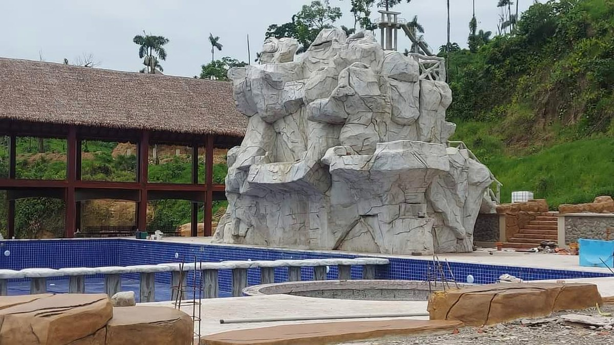
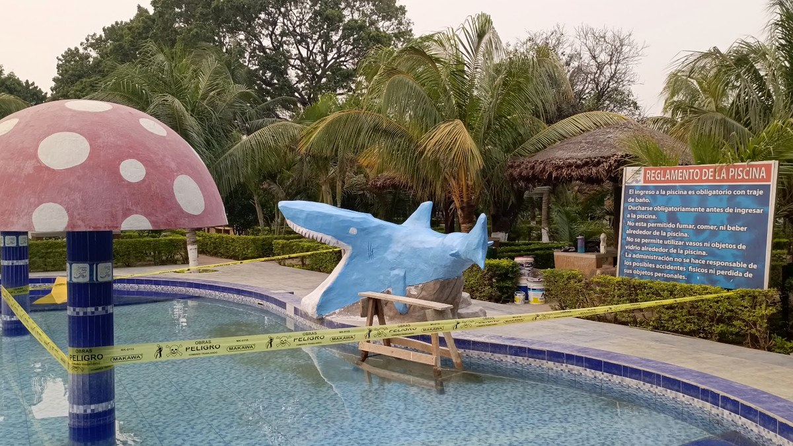
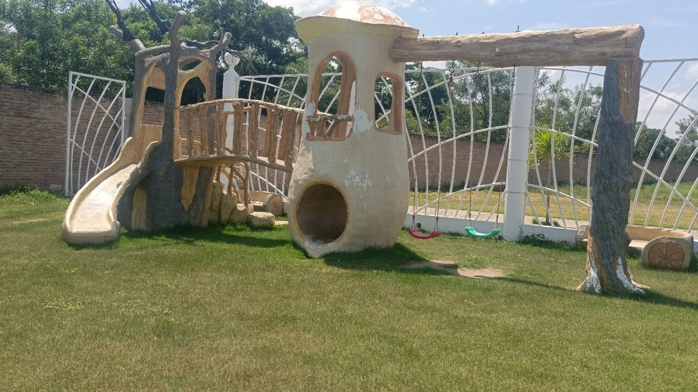
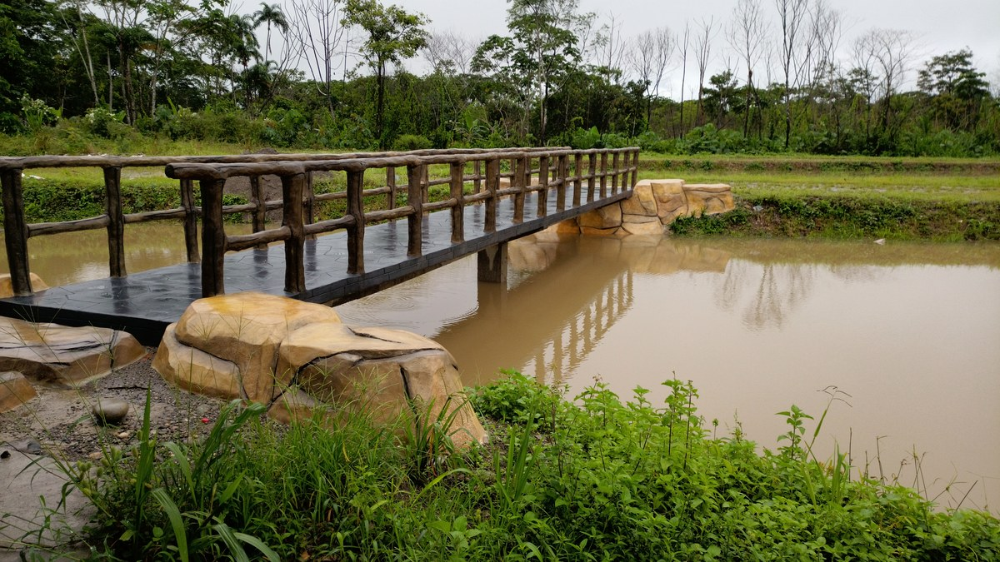
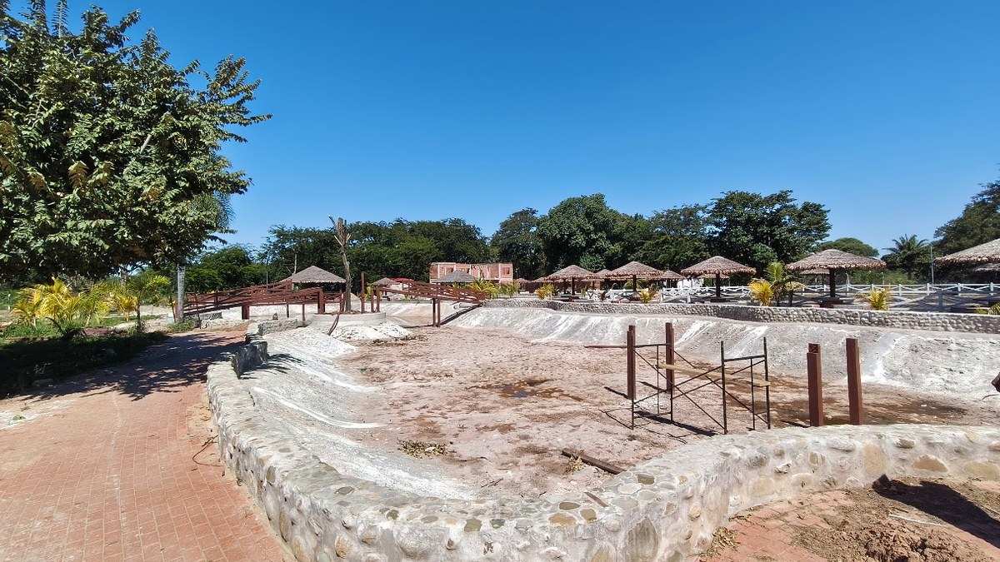
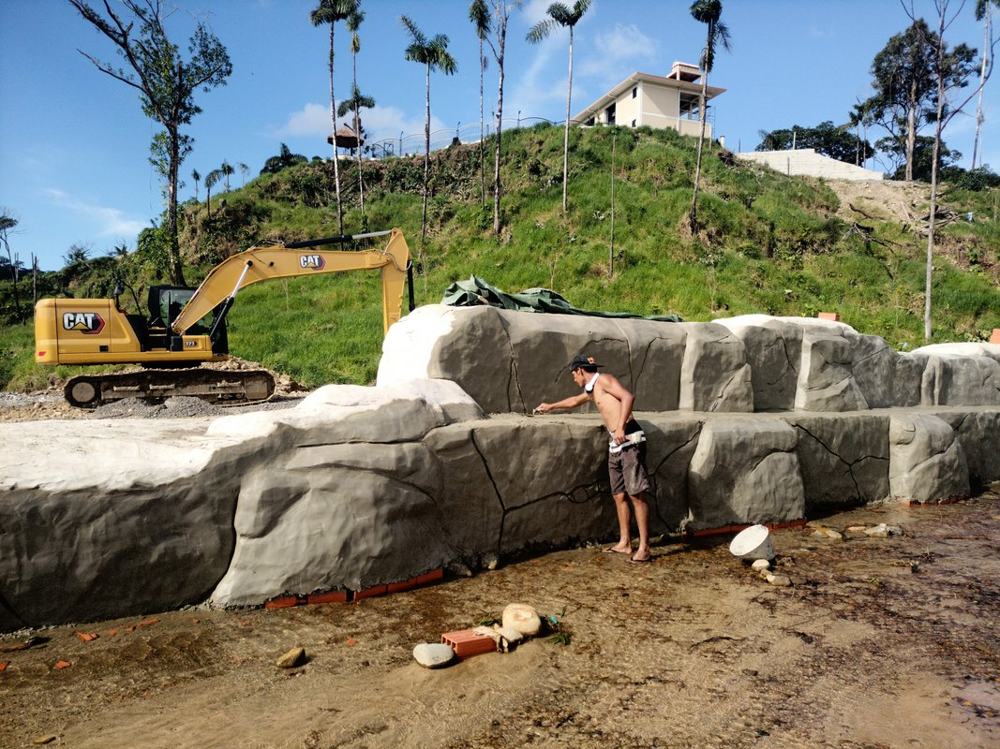
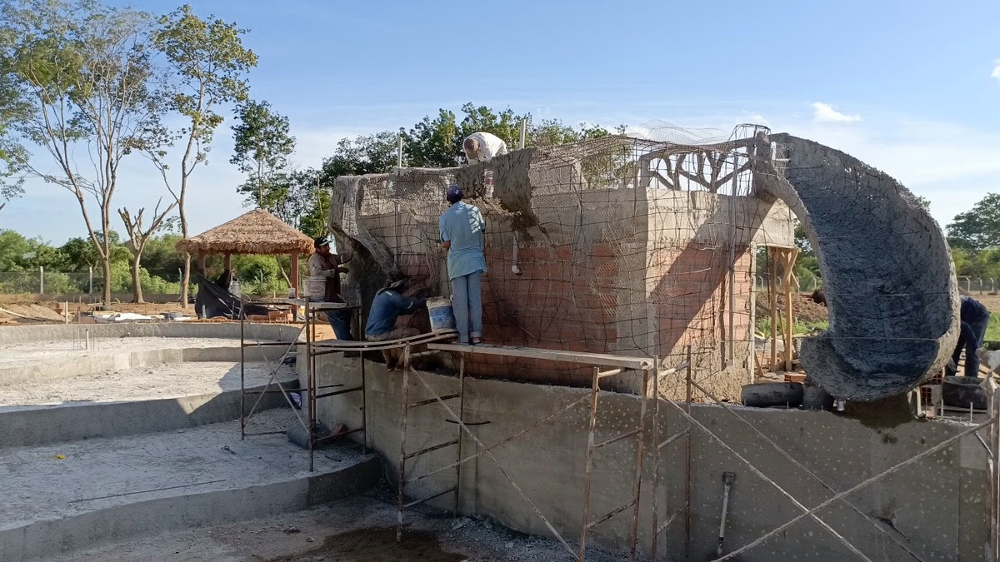
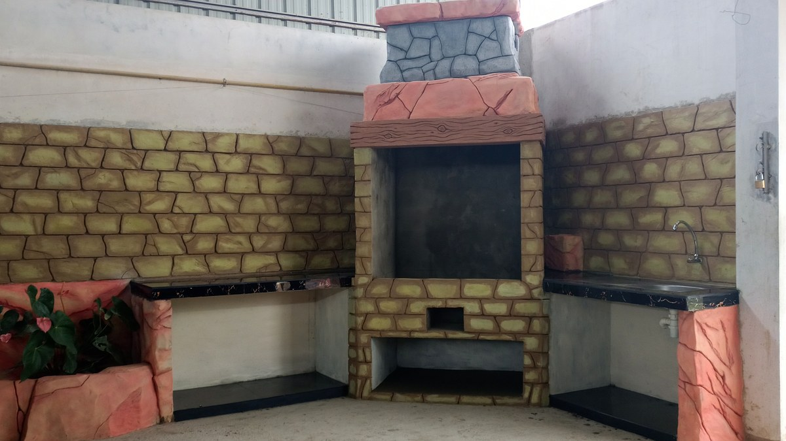
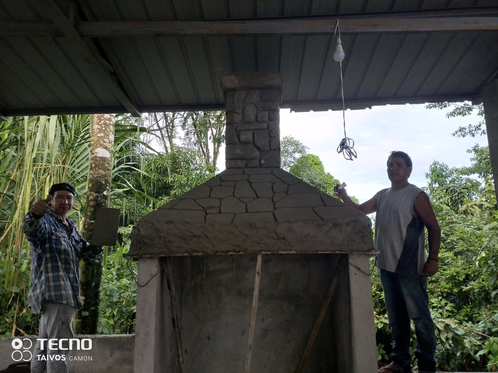

EXPERIENCIAS NATURALES ÚNICAS
Esculpimos bio-piscinas naturales, cascadas termales y tematizaciones en roca viva para residencias de alta gama y proyectos turísticos en toda Bolivia.

ARTE, GEOLOGÍA & NATURALEZA VIVA
En Rock Art transformamos la topografía en experiencias habitables de alta gama. Fusionamos la ingeniería de bio-piscinas ecológicas con el modelado artesanal de roca artificial hiperrealista, inspirados en la majestuosidad mineral y la riqueza hídrica de Bolivia.
Con más de 15 años de trayectoria en Santa Cruz, Cochabamba, La Paz y todo el país, desarrollamos obras que prescinden de químicos agresivos gracias a sistemas de filtración botánica y biológica, logrando que cada cascada, caverna y bio-lago dialogue en perfecta simbiosis con la arquitectura de tu hogar o complejo turístico.
"Nuestro compromiso es esculpir espacios donde el agua, la piedra y la arquitectura coexistan en armonía eterna."
NUESTROS SERVICIOS
NATURALEZA
Integramos elementos naturales para crear ambientes armónicos y sostenibles con agua pura y flora nativa.
DISEÑO
Desarrollamos propuestas creativas y funcionales adaptadas a cada espacio y necesidad en renders fotorrealistas.
TEMATIZACIONES
Damos vida a tus ideas mediante esculturas, relieves y ambientaciones temáticas únicas en roca y cavernas.
EXPERIENCIA
Creamos experiencias sensoriales memorables con sonido de agua, iluminación nocturna cálida y descanso absoluto.
DE LA ESTRUCTURA EN OBRA A LA ARQUITECTURA VIVA
Desliza el control interactivo para comparar el proceso real: de la estructura modelada en mortero mineral bruto y puntales de apoyo, al mirador y gazebo rústico terminado frente a la laguna.

 ANTES
ANTES
PROYECTOS DESTACADOS


GALERÍA DE OBRAS Y TEMATIZACIONES
Explora nuestra colección de obras maestras construidas en roca, agua y vegetación viva.










LO QUE DICEN NUESTROS CLIENTES
Familias y empresarios hoteleros que confiaron su paraíso privado a Rock Art.
"Transformaron el jardín de nuestra casa en el Urubó en una verdadera laguna tropical con cascadas. El acabado de la roca es tan real que nuestros invitados no pueden creer que sea obra artificial."
"Buscábamos una piscina biológica sin cloro para nuestro resort ecológico. El equipo de Rock Art diseñó el sistema de filtrado perfecto y los tiempos de entrega se cumplieron al 100%."
"La tematización subterránea de nuestro restaurante en La Paz es el mayor atractivo. Los relieves prehispánicos y la cascada interna generan un ambiente mágico donde la gente hace fila para cenar."
INICIA TU PROYECTO CON NOSOTROS
Cuéntanos tu visión. Diseñamos propuestas personalizadas para residencias, hoteles y centros turísticos.
Solicitar Asesoría o Cotización
Información Directa
Contáctanos directamente o visítanos en nuestro estudio central en Santa Cruz de la Sierra. Realizamos obras y proyectos a nivel nacional.